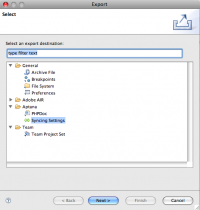
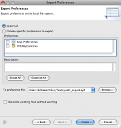
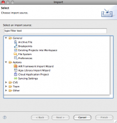

Exporting and importing your preference settings is handy for switching between two different workspaces or computers.
This topic only applies to general preferences. To export and import Colorization preferences please read Exporting and importing colorization preferences.
Contents |
  Export Settings Wizard
Export Settings Wizard
{kind=link}
 Export Preferences Settings
{kind=link}
 Import Settings Wizard
{kind=link}
Exporting General Preferences
- From the File menu, select Export... to open the Export wizard
- Select General > Preferences and click Next
- Choose the Export all option
- Enter or select a file to which the preferences should be written
- Click the Finish button, Studio saves your preferences
Importing General Preferences
- From the File menu, select Import... to open the Import window
- Select General > Preferences and click Next
- Click the Browse button and browse to the .epf file containing the preferences you wish to import
- Choose the Import all option
- Click the Finish button and Studio imports the preferences from the specified file.
Exporting Sync Preferences
- From the File menu, select Export... to open the Export wizard
- Select Aptana > Sync Settings and click Next
- Enter or select a file to which the preferences should be written
- Click the Finish button, Studio saves your preferences
Importing Sync Preferences
- From the File menu, select Import... to open the Import window
- Select Aptana > Sync Settings and click Next
- Click the Browse button and browse to the .epf file containing the preferences you wish to import
- Click the Finish button and Studio imports the preferences from the specified file.